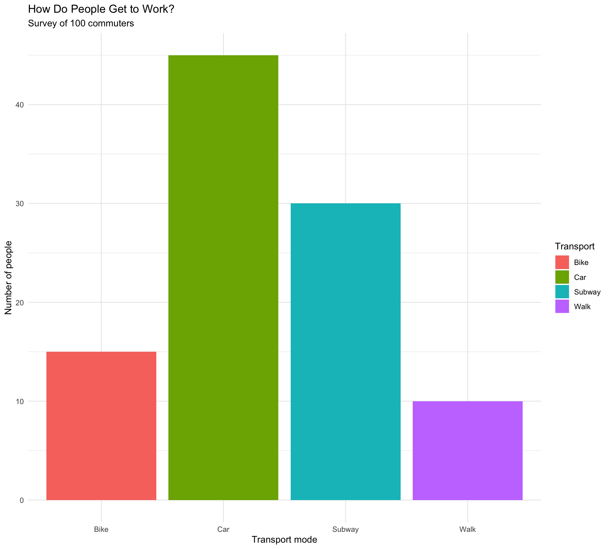
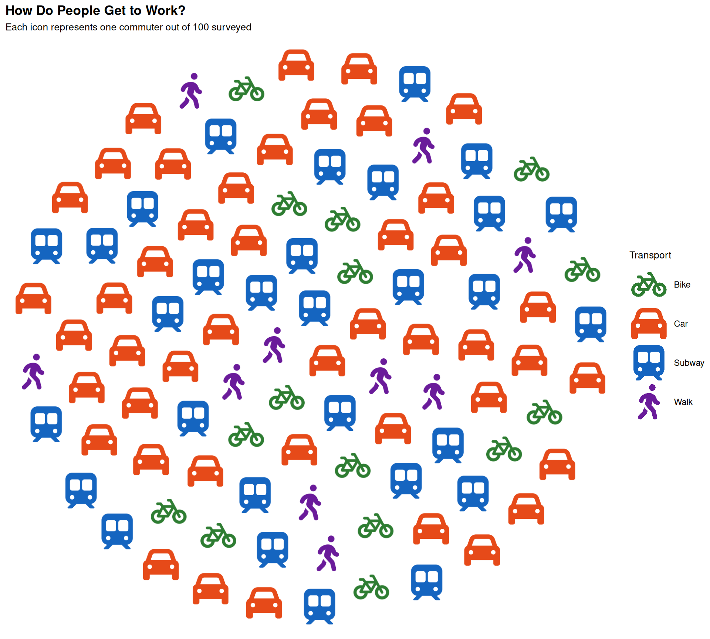
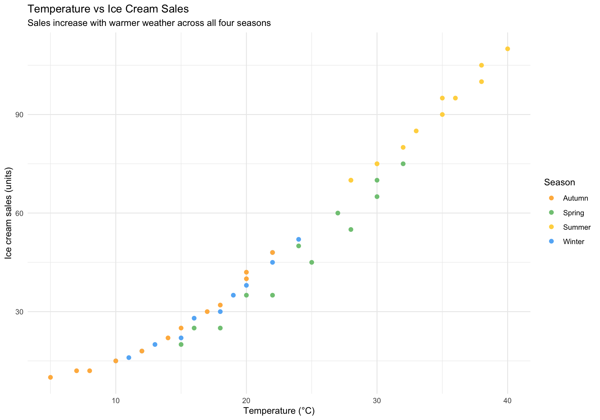
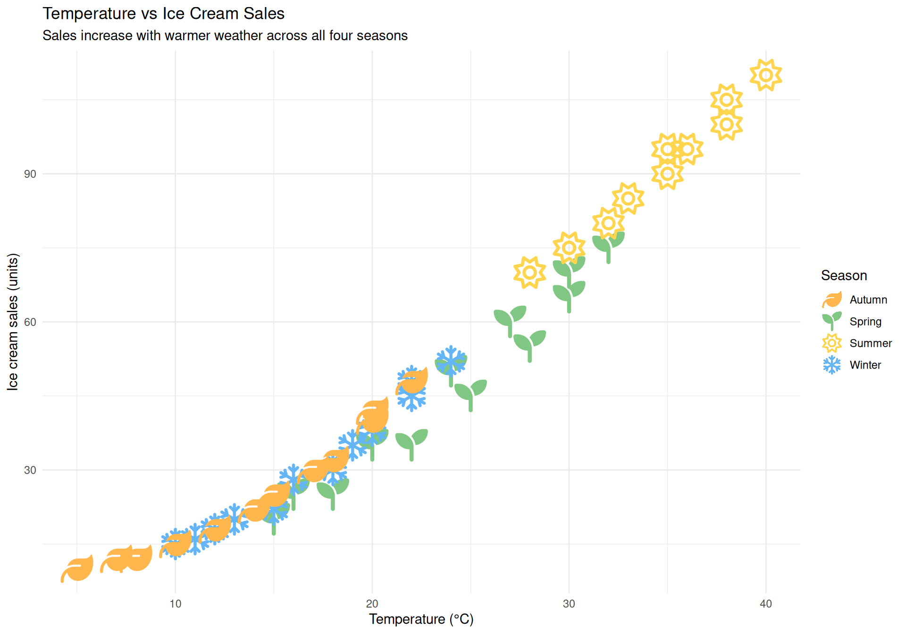

# R can be used as a calculator
2 + 2
10 * 5
100 / 4A guide for complete beginners. No math or programming experience required — just follow along.
What is R?
R is a free programming language designed for working with data. Think of it as a very powerful calculator that can also draw charts, run statistics, and handle millions of rows of information.
Why R works for beginners:
- It’s free and runs on Windows, Mac, and Linux
- It has thousands of packages (ready-made tools built by other people)
- A large community — your questions are likely already answered online
- It’s used by scientists, journalists, economists, and data analysts around the world
Step 0 — Install R and RStudio
Before anything else, you need two free programs:
- R — the language itself. Download from cran.r-project.org
- RStudio — a friendly interface for writing R code. Download from posit.co/download/rstudio-desktop
Install R, then RStudio. The Console (bottom-left) is where you type commands.
Think of it like this
R is the engine. RStudio is the car. You drive the car, not the engine directly.
Step 1 — Your first commands
Click inside the Console and type the following. Press Enter after each line.
[1] 4[1] 50[1] 25The # symbol starts a comment — R ignores anything after it.
Saving values with <-
Instead of re-typing numbers every time, you can save them into a variable using the arrow <-:
my_number <- 42
my_name <- "Jorge"
my_number[1] 42
my_name[1] "Jorge"Now my_number holds the value 42. You can use it anywhere:
my_number * 2[1] 84Naming variables
Use descriptive names with underscores:
population_2024,total_cats. Avoid spaces and special characters. R is case-sensitive:MyDataandmydataare different things.
Step 2 — Understanding data frames
In R, data lives in data frames — think of them as spreadsheets with rows and columns. Each column is a variable (like “city” or “population”), and each row is one observation.
Here’s how to create a simple data frame:
df_cities <- data.frame(
city = c("Paris", "Tokyo", "Cairo", "Lagos"),
population = c(2161000, 13960000, 22183000, 15387639)
)
df_cities city population
1 Paris 2161000
2 Tokyo 13960000
3 Cairo 22183000
4 Lagos 15387639data.frame() creates a table. c() combines values into a column. Commas separate columns.
You can access a single column using $:
df_cities$city[1] "Paris" "Tokyo" "Cairo" "Lagos"
df_cities$population[1] 2161000 13960000 22183000 15387639Step 3 — Installing packages
R’s power comes from packages — collections of extra functions. Install once, load every session.
# Install packages (do this once)
install.packages("ggplot2")
install.packages("ggpop")
# Load packages (do this every time you open RStudio)
library(ggplot2)
library(ggpop)The difference between install and library
install.packages()downloads once.library()loads per session.
Step 4 — Your first chart with ggplot2
First, a simple ggplot2 chart to understand the structure:
We’ll use data about how people in a city get to work. Imagine we surveyed 100 commuters:
df_transport <- data.frame(
transport = c("Car", "Subway", "Bike", "Walk"),
count = c(45, 30, 15, 10)
)
df_transport transport count
1 Car 45
2 Subway 30
3 Bike 15
4 Walk 10Now let’s make a bar chart:
library(ggplot2)
ggplot(data = df_transport, aes(x = transport, y = count, fill = transport)) +
geom_bar(stat = "identity") +
labs(
title = "How Do People Get to Work?",
subtitle = "Survey of 100 commuters",
x = "Transport mode",
y = "Number of people",
fill = "Transport"
) +
theme_minimal()
Let’s read the code line by line:
| Code | What it does |
|---|---|
ggplot(data = ..., aes(...)) |
Creates the canvas and maps columns to visual properties |
aes(x = transport, y = count, fill = transport) |
x = horizontal axis, y = bar height, fill = bar color |
geom_bar(stat = "identity") |
Draws the bars (use "identity" when your data already has the counts) |
labs(...) |
Adds titles and axis labels |
theme_minimal() |
Applies a clean, minimal style |
ggplot2 builds charts by layering pieces with +.
Step 5 — Upgrade to ggpop
ggpop replaces bars with icons — each person becomes visible. Let’s recreate this:
First, we build a data frame with one row per person (instead of one row per group):
rep("Car", 45) creates 45 rows — one per commuter. icon holds the Font Awesome name.
Now the chart:
library(ggpop)
ggplot(data = df_commuters, aes(icon = icon, color = transport)) +
geom_pop(size = 2, dpi = 100, legend_icons = TRUE) +
scale_color_manual(values = c(
"Car" = "#E64A19",
"Subway" = "#1565C0",
"Bike" = "#2E7D32",
"Walk" = "#6A1B9A"
)) +
theme_pop() +
scale_legend_icon(size = 7) +
labs(
title = "How Do People Get to Work?",
subtitle = "Each icon represents one commuter out of 100 surveyed",
color = "Transport"
)
Same structure as ggplot2, but each data point is visible as an icon.
Finding icon names
Use
fa_icons()to search the library of 2,000+ free icons:
Step 6 — Scatter plots with icons using geom_icon_point()
geom_icon_point() places icons on a scatter plot — one per data point, no grid.
Let’s use a dataset about sleep and performance. We surveyed students on how many hours they slept and their exam score, grouped by their preferred study method:
df_weather <- data.frame(
temperature = c(15, 18, 22, 25, 28, 30, 32, 30, 27, 24, 20, 16,
10, 12, 15, 18, 20, 22, 24, 22, 19, 16, 13, 11,
5, 8, 12, 15, 18, 20, 22, 20, 17, 14, 10, 7,
28, 30, 32, 35, 36, 38, 40, 38, 35, 33, 30, 28),
ice_cream_sales = c(20, 25, 35, 45, 55, 65, 75, 70, 60, 50, 35, 25,
15, 18, 22, 30, 38, 45, 52, 48, 35, 28, 20, 16,
10, 12, 18, 25, 32, 40, 48, 42, 30, 22, 15, 12,
70, 75, 80, 90, 95, 100, 110, 105, 95, 85, 75, 70),
season = c(
rep("Spring", 12),
rep("Winter", 12),
rep("Autumn", 12),
rep("Summer", 12)
),
icon = c(
rep("seedling", 12),
rep("snowflake", 12),
rep("leaf", 12),
rep("sun", 12)
)
)Now plot it with geom_point():
ggplot(
data = df_weather,
aes(x = temperature, y = ice_cream_sales, icon = icon, color = season)
) +
geom_point(size = 2) +
scale_color_manual(values = c(
"Spring" = "#81C784",
"Summer" = "#FFD54F",
"Autumn" = "#FFB74D",
"Winter" = "#64B5F6"
)) +
scale_legend_icon(size = 9) +
labs(
title = "Temperature vs Ice Cream Sales",
subtitle = "Sales increase with warmer weather across all four seasons",
x = "Temperature (°C)",
y = "Ice cream sales (units)",
color = "Season"
) +
theme_minimal()
Now with geom_icon_point():
ggplot(
data = df_weather,
aes(x = temperature, y = ice_cream_sales, icon = icon, color = season)
) +
geom_icon_point(size = 2, dpi = 100) +
scale_color_manual(values = c(
"Spring" = "#81C784",
"Summer" = "#FFD54F",
"Autumn" = "#FFB74D",
"Winter" = "#64B5F6"
)) +
scale_legend_icon(size = 9) +
labs(
title = "Temperature vs Ice Cream Sales",
subtitle = "Sales increase with warmer weather across all four seasons",
x = "Temperature (°C)",
y = "Ice cream sales (units)",
color = "Season"
) +
theme_minimal()
Where to go from here
You went from zero to four real charts in R. Here’s what to explore next:
| Topic | Where to look |
|---|---|
More geom_pop() examples |
Getting Started vignette |
| Icon search | Font Awesome Icons vignette |
More geom_icon_point() examples |
geom_icon_point() vignette |
| Colors & themes | Themes & Customization vignette |
| Common pitfalls | Tips & Best Practices vignette |
Keep learning R
The best way to learn is to work with data you care about. Find a dataset about something you’re interested in — sports, music, health, economics — and try to visualize it.
When stuck, copy the error into a search engine — the R community is helpful.